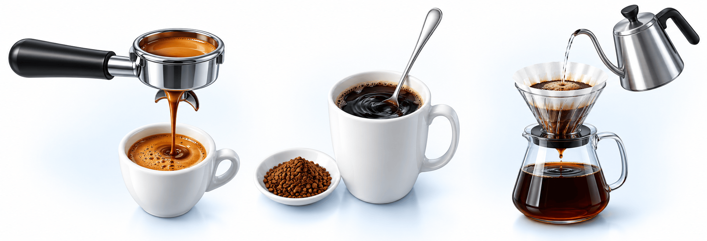

1결과지의 숫자 4개 — 무엇을 뜻하나요
| 항목 | 이렇게 보세요 | 결과지 기준(mg/dL)† |
|---|---|---|
| 총콜레스테롤 | 여러 콜레스테롤을 모두 합친 값 — 좋은 HDL이 높아도 올라갑니다 | 적정 <200 · 높음 ≥240 |
| LDL '나쁜' | 혈관벽에 쌓여 심근경색·뇌졸중을 일으킴 — 약은 이 숫자로 정합니다 | 적정 <100 · 높음 ≥160 |
| HDL '좋은' | 혈관에 쌓인 콜레스테롤을 간으로 되돌림 — 낮을수록 나쁩니다 | 낮음 <40 |
| 중성지방 | 식사·술·체중에 따라 크게 변함 — 500 이상이면 급성 췌장염 위험 | 적정 <150 · 높음 ≥200 |
2중성지방은 생활습관, LDL은 체질의 영향이 큽니다
중성지방은 낮은데 LDL만 높다면 — 생활습관보다 체질(유전) 쪽일 가능성이 큽니다. 내 탓은 아니지만 생활습관만으로는 덜 내려가, 위험도에 따라 약을 함께 생각합니다.
3약은 언제? — 내 위험인자부터 세어 보세요
위험인자 5가지 — ① 나이(남 45세·여 55세 이상) ② 고혈압(수축기 140 또는 이완기 90 이상, 또는 혈압약) ③ 흡연 ④ HDL 40 미만 ⑤ 부모·형제의 이른 협심증·심근경색* · HDL 60~100이면 1개 빼기
| 나의 상황 | LDL 목표 | 약을 고려 | 약 시작 |
|---|---|---|---|
| 위험인자 0~1개 | <160 | 130~159 | 160 이상 |
| 위험인자 2개 이상 | <130 | 100~129 | 130 이상 |
| 당뇨 (10년 미만 · 위험인자 없음) | <100 | 70~99 | 100 이상 |
| 당뇨(10년 이상, 또는 위험인자·장기 손상**) · 동맥경화성 뇌경색·일과성 뇌허혈 · 경동맥·다리 동맥 질환 | <70 · 50%↓ | 55~69 | 70 이상 |
| 협심증·심근경색(스텐트 포함) · 동맥경화성 심혈관질환이 있는 당뇨 | <55 · 50%↓ | 55 미만도 고려 | 55 이상 |
심근경색이 막 생겼다면 수치와 관계없이 바로 약 · LDL 190 이상은 다른 원인(갑상선기능저하 등)을 확인하고, 없으면 위험인자와 관계없이 약 · 위험인자 0~1개·2개 이상인 분은 몇 주~몇 달 생활요법을 먼저 하고도 높을 때 약 시작(이때 타고나는 수치인 Lp(a)가 50 mg/dL 이상이면 더 적극적으로) · † 결과지 범위는 개인 위험도를 따지지 않은 기준 · * 남 55세·여 65세 전 발병 · ** 알부민뇨·신장 기능(eGFR) 60 미만·망막병증·신경병증·좌심실비대 · 당뇨는 위험인자 개수에 넣지 않음 · 50%↓ = 치료 전의 절반 이하로
4생활요법 6가지
- 1밥·빵·면·단 음료를 너무 많이 먹지 않기
- 2통곡물·잡곡·채소로 식이섬유 하루 25 g 이상
- 3기름진 고기·버터·튀김·배달음식 줄이기 (포화지방·트랜스지방)
- 4단백질은 생선·콩으로, 가공육·붉은 고기는 줄이기
- 5술은 가급적 끊기 — 마시더라도 하루 1~2잔 이내
- 6숨이 약간 찰 정도의 유산소 주 150~300분, 근력운동 주 2~3회
5LDL을 올리는 커피 기름(카페스톨)

에스프레소아메리카노·라떼 중간
동결건조인스턴트 적음
종이필터 드립필터가 거름 적음
동결건조·드립은 둘 다 거의 없음 · 가장 많은 것은 끓인 커피·튀르키예식